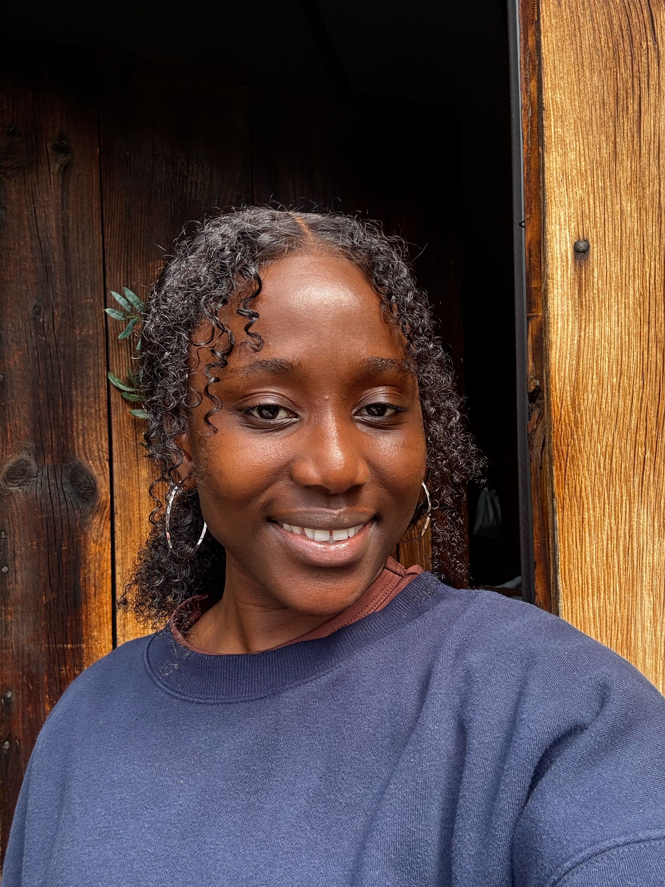

Sanuratu Koroma
Building data-driven tools for measurement and impact .
Hello, I’m a second-year Ph.D. student in Computer Science at the University of Massachusetts Amherst. My background combines applied machine learning, deep learning, and data analytics, with interests in infrastructure measurement, urbanization, energy systems, and development.
About
I’m a Ph.D. student in Computer Science with research experience in applied machine learning, neural networks, and data analytics and their applications to infrastructure, measurement, and development. I also hold a Master’s in Electrical and Computer Engineering focused on renewable energy and energy policy, IoT/embedded systems, and data science. My bachelor's was in Electrical and Electronic Engineering.
Research Areas
Highlights
- Applied ML + data analytics for infrastructure and development questions
- Energy + emissions work spanning monitoring and prediction
- Hands-on engineering background (smart meters, PCB, networks)
Projects
Publications
Digital Monitoring for Health Facility Emission Prediction and Climate Finance
Work Experience
Metering Engineer — Energicity DBA Power Leone
- Supervised a team of five meter builders in developing 4,000+ smart meters
- Led transition from circuitry prototypes to PCB implementation
- Managed a three-month project timeline, reducing delays in assigning customer meters
- Executed daily troubleshooting and coordinated fixes with field engineers
IT Engineer — Africell SL
- Worked at the IT help desk, supporting users and troubleshooting systems
- Configured routers and assisted customers with network setup
- Ran network/fiber cables and helped build a small network for ~15 employees
Extra Curricular
Volunteer Workshop Host
IoT Club General Manager
College Application Reviewer
Technologies
Tools/Platforms: Cesium, Cisco Packet Tracer, Unix/Linux, PV System Design, PCB Dev, Machine Learning, Neural Networks, Data Analytics, LaTeX, VS Code, Google Earth Engine, SolidWorks, MPLAB IDE, Keil uVision, ProjectLibre
Contact
Let’s connect
Best ways to reach me:
Location
© Sanuratu Koroma. Built with plain HTML/CSS/JS and hosted on GitHub Pages.